We are making predictions all the time, often without realizing it. For example, imagine we are waiting at a bus stop and want to guess how long it will be before a bus arrives. We can combine many sources of evidence,
- How many people are currently at the stop? If there are more people, we think a bus might arrive soon.
- What time of day is it? If its during rush hour, we would expect more frequent service.
- What is the weather like? If it is poor weather, we might expect delays.
- etc.
To think about the process formally, we could imagine a vector \(\mathbf{x}_i \in \mathbb{R}^{D}\) reflecting \(D\) characteristics of our environment. If we collected data about how long we actually had to wait, call it \(y_i\), for every day in a year, then we would have a dataset \[\begin{align*} \left(\mathbf{x}_1, y_1\right) \\ \left(\mathbf{x}_2, y_2\right) \\ \vdots \\ \left(\mathbf{x}_{365}, y_{365}\right) \\ \end{align*}\] and we could try to summarize the relationship \(\mathbf{x}_i \to y_i\). Methods for making this process automatic, based simply on a training dataset, are called supervised learning methods.
In the above example, the inputs were a mix of counts (number of people at stop?) and categorical (weather) data types, and our response was a nonnegative continuous value. In general, we could have arbitrary data types for either input or response variable. A few types of outputs are so common that they come with their own names,
- \(y_i\) continuous \(\to\) regression
- \(y_i\) categorical \(\to\) classification
For example,
- Trying to determine whether a patients disease will be cured by a treatment is a classification problem the outcomes are either yes, they will be cured, or no, they wont.
- Trying to estimate the crop yield of a plot of farmland based on a satellite image is a regression problem it could be any continuous, nonnegative number.
There are in fact many other types of responses (ordinal, multiresponse, survival, functional, image-to-image, ) each which come with their own names and set of methods, but for our purposes, its enough to focus on regression and classification.
There is a nice geometric way of thinking about supervised learning. For regression, think of the inputs on the \(x\)-axis and the response on the \(y\)-axis. Regression then becomes the problem of estimating a one-dimensional curve from data.
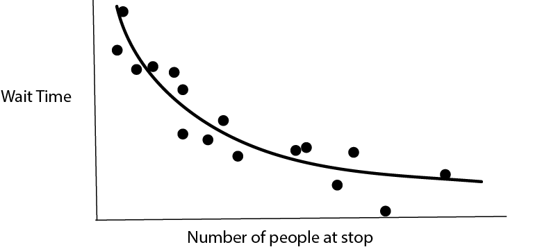
In higher-dimensions, this becomes a surface.
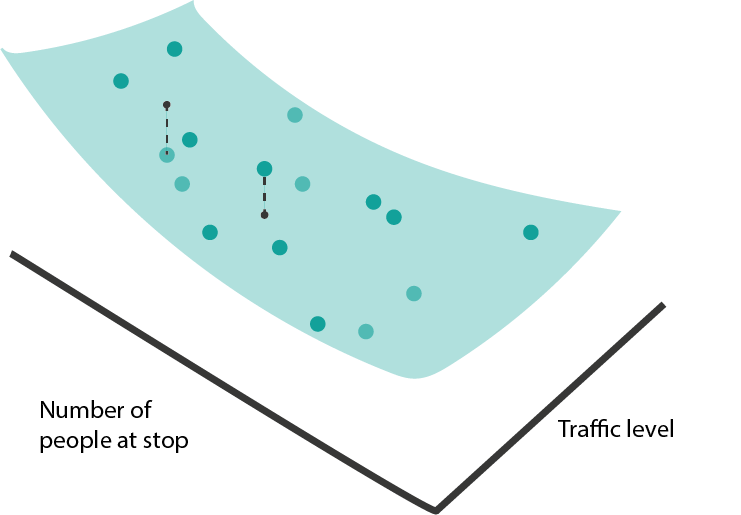
If some of the inputs are categorical (e.g., poor vs.good weather), then the regression function is no longer a continuous curve, but we can still identify group means.
- Classification has a similar geometric interpretation, except instead of a continuous response, we have categorical labels. We can associate classes with colors. If we have only one input, classification is the problem of learning which regions of the input are associated with certain colors.
In higher-dimensions, the view is analogous. We just want to find boundaries between regions with clearly distinct colors. For example, for disease recurrence, blood pressure and resting heart rate might be enough to make a good guess about whether a patient will have recurrence or not.
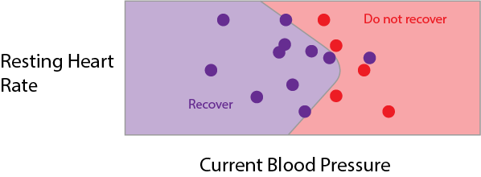
Model Classes
- Drawing curves and boundaries sounds simple, but is a surprisingly difficult problem, especially when the number of potentially informative features \(D\) is large. It helps to have predefined types of curves (and boundaries) that we can refer to and use to partially automate the process of supervised learning. Well call an example of these predefined curve types a model class. Lets just build some intuition about what each model class looks like and how we might be able to fit it with data.
Linear Models
- Maybe the simplest curve is a linear one, \[\begin{align*} f_{b}\left(x\right) = b_0 + b_1 x_1. \end{align*}\] Here, \(b_0\) gives the \(y\)-intercept and \(b_1\) gives the slope.
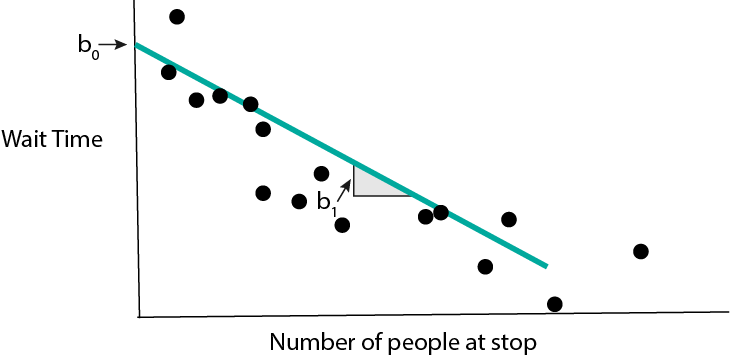
When we have many input features, the equivalent formula is \[\begin{align*} f_{b}\left(x\right) = b_0 + b_1 x_1 + \dots + b_{D}x_{D} := b^{T}x, \end{align*}\] where Ive used the dot-product from linear algebra to simplify notation (after having appended a 1). This kind of model is called a linear regression model.

- How do we find a \(b\) that fits the data well? We can try to optimize a loss function. This measures the quality of the fitted line. For linear regression, a good choice is squared error loss,
\[\begin{align*} L\left(b\right) = \sum_{i = 1}^{N} \left(y_i - b^{T}x_{i}\right)^2. \end{align*}\]
- For classification, we can imagine drawing a linear boundary. For simplicity, well assume we have only two classes, though a similar partition of the space can be made for arbitrary numbers of classes.
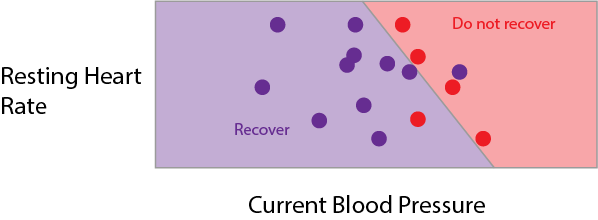
To describe this, we need to define a direction \(b\) perpendicular to the boundary. We will say that whenever \[\begin{align*} f_{b}\left(x\right) = \frac{1}{1 + \text{exp}\left(b^T x\right)} \end{align*}\] is larger than 0.5, were in the red region, and whenever its smaller than 0.5, were in the purple region. This kind of model is called a logistic regression model.

- We need a loss function for logistic regression too. In theory, we could continue to use squared error loss, but we can do better by considering the fact that the true response is only one of two values. To make things concrete, say that \(y_i = 1\) whenever it is an red point, otherwise \(y_i = 0\). We can use binary cross-entropy loss,
\[\begin{align*} -\left[\sum_{i = 1}^{N} y_i \log\left(f_{b}\left(x_i\right)\right) + \left(1 - y_i\right) \log\left(1 - f_{b}\left(x_i\right)\right)\right] \end{align*}\]
To understand this loss, note that each term decomposes into either the blue or red curve, depending on whether the \(y_i\) is 1 or 0.

If 1 is predicted with probability 1, then there is no loss (and conversely for 0). The loss increases the further the predicted probability is from the true class.
- Lets fit a linear regression in code. Below, Im loading a dataset about diabetes disease progression. The response \(y\) is disease severity one year after diagnosis, it ranges from 25 (low severity) to 246 (high severity). There are \(D = 10\) numeric predictors; below I print 4 samples corresponding to the first 5 features.
import numpy as np
import pandas as pd
import matplotlib.pyplot as plt
from sklearn import datasets, linear_model
X, y = datasets.load_diabetes(return_X_y=True)
X[:4, :5] # first five predictorsarray([[ 0.03807591, 0.05068012, 0.06169621, 0.02187239, -0.0442235 ],
[-0.00188202, -0.04464164, -0.05147406, -0.02632753, -0.00844872],
[ 0.08529891, 0.05068012, 0.04445121, -0.00567042, -0.04559945],
[-0.08906294, -0.04464164, -0.01159501, -0.03665608, 0.01219057]])y[:4] # example responsearray([151., 75., 141., 206.])Lets now fit a linear model from \(\mathbf{x}_1, \dots, \mathbf{x}_{N}\) to \(y\).
The first line tells python that we are using a LinearRegression model class.
The second searches over coefficients \(b\) to minimize the squared-error loss
between the \(b^T x_i\) and \(y_i\). The third line prints out the fitted coefficient
\(\hat{b}\).
model = linear_model.LinearRegression()
model.fit(X, y)LinearRegression()In a Jupyter environment, please rerun this cell to show the HTML representation or trust the notebook.
On GitHub, the HTML representation is unable to render, please try loading this page with nbviewer.org.
LinearRegression()
model.coef_ # fitted b coefficientsarray([ -10.0098663 , -239.81564367, 519.84592005, 324.3846455 ,
-792.17563855, 476.73902101, 101.04326794, 177.06323767,
751.27369956, 67.62669218])- Lets do the same thing for a logistic regression. This time, well use the
Palmers Penguins dataset, which tries to classify penguins into one of three
types based on their appearance. For example, two of the features are bill
height and bill depth (figure from Allison Horsts
palmerspenguinspackage).

Well read the data from a public link and print the first few rows.
import pandas as pd
penguins = pd.read_csv("https://raw.githubusercontent.com/krisrs1128/stat679_code/0330ce6257ff077c5d4ed9f102af6be089f5c486/examples/week6/week6-4/penguins.csv")
penguins.head() species island bill_length_mm ... body_mass_g sex year
0 Adelie Torgersen 39.1 ... 3750 male 2007
1 Adelie Torgersen 39.5 ... 3800 female 2007
2 Adelie Torgersen 40.3 ... 3250 female 2007
3 Adelie Torgersen 36.7 ... 3450 female 2007
4 Adelie Torgersen 39.3 ... 3650 male 2007
[5 rows x 8 columns]Well predict species using just bill length and depth. First, lets make a
plot to see how easy / difficult it will be to create a decision boundary.
ggplot(py$penguins) +
geom_point(aes(bill_length_mm, bill_depth_mm, col = species)) +
scale_color_manual(values = c("#3DD9BC", "#6DA671", "#F285D5")) +
labs(x = "Bill Length", y = "Bill Depth")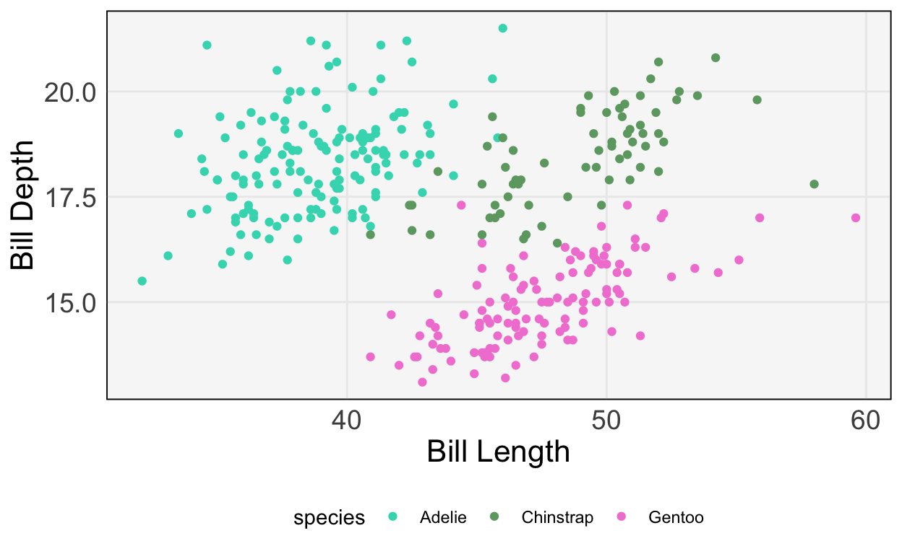
- It seems like we should be able to draw nice boundaries between these classes. Lets fit the model.
model = linear_model.LogisticRegression()
penguins = penguins.dropna()
X, y = penguins[["bill_length_mm", "bill_depth_mm"]], penguins["species"]
model.fit(X, y)LogisticRegression()In a Jupyter environment, please rerun this cell to show the HTML representation or trust the notebook.
On GitHub, the HTML representation is unable to render, please try loading this page with nbviewer.org.
LogisticRegression()
penguins["y_hat"] = model.predict(X)The plot below compares the predicted class (left, middle, and right panels) with the true class (color). We get most of the samples correct, but have a few missclassifications near the boundaries.
ggplot(py$penguins) +
geom_point(aes(bill_length_mm, bill_depth_mm, col = species)) +
scale_color_manual(values = c("#3DD9BC", "#6DA671", "#F285D5")) +
labs(x = "Bill Length", y = "Bill Depth") +
facet_wrap(~ y_hat)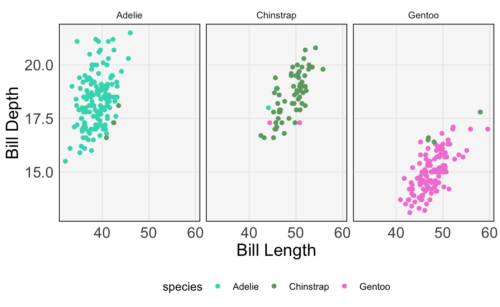
Exercise: Repeat this classification, but using at least two additional predictors.
Sparse Linear Models
- In many cases, we will have recorded many types of features coordinates of \(x_{i}\) that are not actually related to the response. A model that knows to ignore irrelevant features will do better than a model that tries to use all of them. This is the main idea behind using sparsity in linear regression. We again fit the model \[\begin{align*} f_{b}\left(x\right) = b_0 + b_1 x_1 + \dots + b_{D}x_{D} := b^{T}x, \end{align*}\] but we make the assumption that many of the \(b_{d}\) are exactly 0. Graphically, we imagine that the response does not change at all as we change some of the inputs, all else held equal.
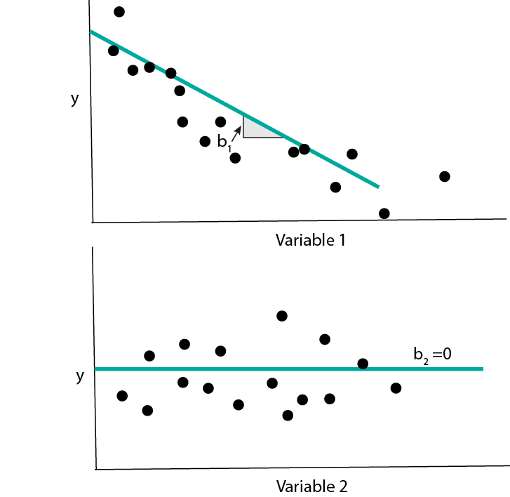
- The same idea can be applied to logistic regression. In this case, having a coefficient \(b_d = 0\) means that the probabilities for different class labels do not change at all as features \(x_d\) is changed.
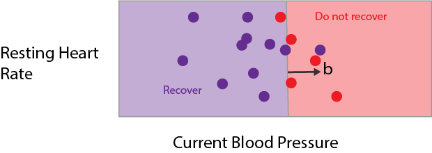
- To implement sparse linear regression using
sklearn, we can use theElasticNetclass. Well work with a dataset of American Baseball sports statistics. The task is to predict each players salary based on their batting statistics.
baseball = pd.read_csv("https://github.com/krisrs1128/naamii_summer_2023/raw/main/assets/baseball.csv")
baseball.head() player salary AtBat ... Assists Errors NewLeagueN
0 -Alan Ashby -0.135055 -0.601753 ... -0.522196 0.212946 1.073007
1 -Alvin Davis -0.123972 0.511566 ... -0.253380 0.818404 -0.928417
2 -Andre Dawson -0.079637 0.626971 ... -0.742763 -0.846605 1.073007
3 -Andres Galarraga -0.985164 -0.561022 ... -0.542874 -0.695240 1.073007
4 -Alfredo Griffin 0.474541 1.292248 ... 2.083253 2.483412 -0.928417
[5 rows x 21 columns]X, y = baseball.iloc[:, 2:], baseball["salary"]
y = (y - y.mean()) / y.std() # standardizeThe block below fits the Elastic Net model and saves the coefficients \(\hat{b}\). Notice that most of them are 0 only a few of the features make a big difference in the salary.
model = linear_model.ElasticNet(alpha=1e-1, l1_ratio=0.5) # in real life, have to tune these parameters
model.fit(X, y)ElasticNet(alpha=0.1)In a Jupyter environment, please rerun this cell to show the HTML representation or trust the notebook.
On GitHub, the HTML representation is unable to render, please try loading this page with nbviewer.org.
ElasticNet(alpha=0.1)
y_hat = model.predict(X)
beta_hat = model.coef_ # notice the sparsity
beta_hatarray([ 0. , 0.17423133, 0. , 0. , 0. ,
0.1050172 , 0. , 0. , 0.07963389, 0.06285448,
0.12726386, 0.16911053, 0. , 0. , -0.0988662 ,
0.12489593, -0. , -0. , 0. ])We can confirm that the predictions are correlated relatively well with the truth.
baseball <- data.frame(py$X, y = py$y, y_hat = py$y_hat)
ggplot(baseball) +
geom_point(aes(y, y_hat)) +
labs(x = "True IMDB Rating", y = "Predicted IMDB Rating")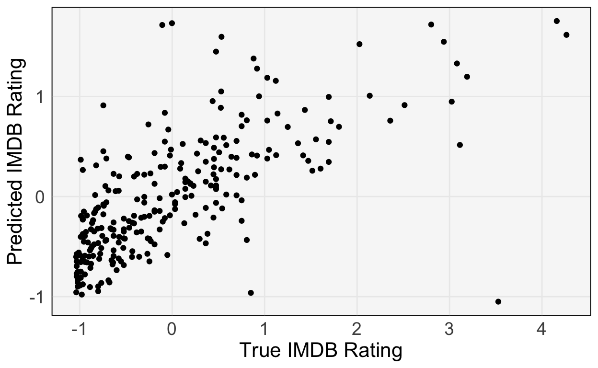
Tree-based Models
- Tree-based models fit a different class of curves. To motivate them, consider making a prediction for the bus time arrival problem using the following diagram,
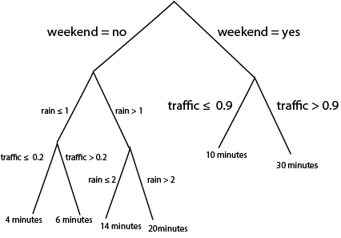
Notice that we can use the same logic to do either regression or classification. For regression, we associate each leaf at the bottom of the tree with a continuous prediction. For classification, we associate leaves with probabilities for different classes. It turns out that we can train these models using squared error and cross-entropy losses as before, though the details are beyond the scope of these notes.
- Its not immediately obvious, but these rules are equivalent to drawing curves that are piecewise constant over subsets of the input space. Lets convince ourselves using some pictures. First, notice that a tree with a single split is exactly a curve that takes on two values, depending on the split point,
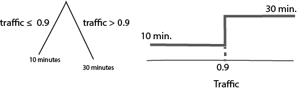
If we split the same variable deeper, it creates more steps,
What if we had two variables? Depending on the order, of the splits, we create different axis-aligned partitions,
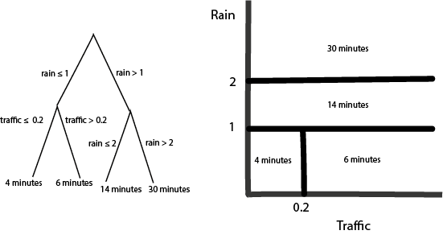
Q: What would be the diagram if I had switched the order of the splits (traffic before rain)?
A very common variation on tree-based models computes a large ensemble of trees and then combines their curves in some way. How exactly they are combined is beyond the scope of these notes, but this is what random forests and gradient boosted decision trees are doing in the background.
We can implement these models in
sklearnusingRandomForestRegressor/RandomForestClassifier, andGradientBoostingRegressor/GradientBoostingClassifier. Lets just see an example of a boosting classifier using the penguins dataset. The fitting / prediction code is very similar to what we used for the sparse regression.
from sklearn.ensemble import GradientBoostingClassifier
model = GradientBoostingClassifier()
X, y = penguins[["bill_length_mm", "bill_depth_mm"]], penguins["species"]
model.fit(X, y)GradientBoostingClassifier()In a Jupyter environment, please rerun this cell to show the HTML representation or trust the notebook.
On GitHub, the HTML representation is unable to render, please try loading this page with nbviewer.org.
GradientBoostingClassifier()
penguins["y_hat"] = model.predict(X)We use the same visualization code to check predictions against the truth. The boosting classifier makes no mistakes on the training data.
ggplot(py$penguins) +
geom_point(aes(bill_length_mm, bill_depth_mm, col = species)) +
scale_color_manual(values = c("#3DD9BC", "#6DA671", "#F285D5")) +
labs(x = "Bill Length", y = "Bill Depth") +
facet_wrap(~ y_hat)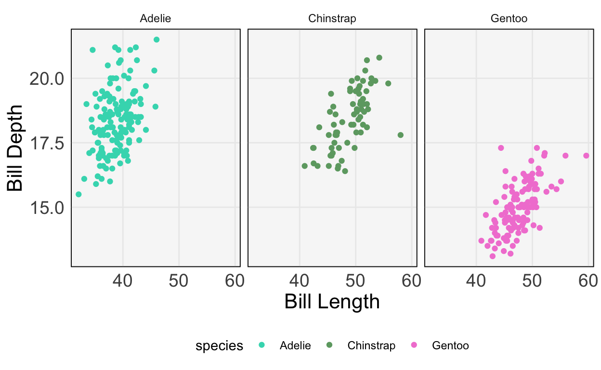
Relationships across classes
- The diagram below summarizes the relationships across elements of the model class.
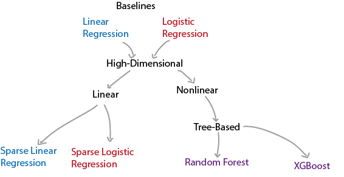
- When should we use which of these approaches? Here are some relative strengths and weaknesses.
| Strengths | Weaknesses | |
|---|---|---|
| Linear / Logistic Regression | * Often easy to interpret * No tuning parameters * Very fast to train |
* Unstable when many features to pick from * Can only fit linear curves / boundaries (though, see featurization notes) |
| Sparse Linear / Logistic Regression | * Often easy to interpret * Stable even when many features to pick from * Very fast to train |
* Can only fit linear curves / boundaries |
| Tree-based Classification / Regression | * Can fit nonlinear functions of inputs | * Can be slow to train * Somewhat harder to interpret |
- Try matching models to responses in the examples below,
- Q1: We want to predict whether a patient has a disease given just their genetic profile. There are 1000 genes that can serve as predictors. There are only two possible responses.
- Q2: A user on a site has been watching (too many) episodes of Doctor Who. How many more minutes will they remain on the site today? As predictors, you have features of their current and past viewing behavior (e.g., current time of day, number of hours on the site per week for each of the last 4 weeks, etc.). We suspect that there are important nonlinear relationships between these predictors and the response.
- Q3: We are trying to predict the next hours total energy production in a wind farm. We have a years worth of past production and weather data, but right now, we just want a baseline using current wind speed and the last hours production.
The answers are,
- A1: Sparse logistic regression. We have two classes, and most of the genes are unlikely to be relevant for classification.
- A2: A tree-based method, like random forests or gradient boosting. This is because we anticipate a nonlinear relationship.
- A3: Linear regression. The response is continuous and we just need a baseline using two predictors.